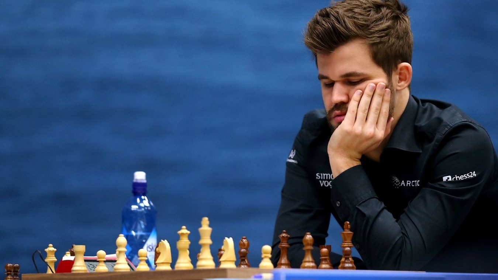
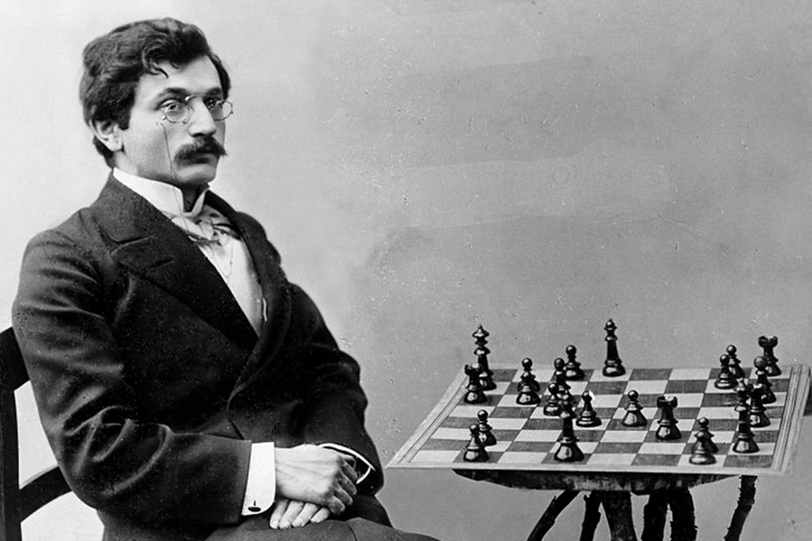
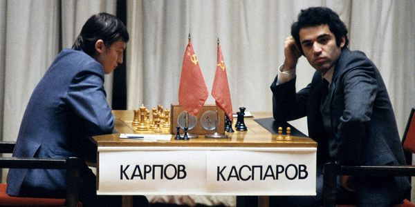
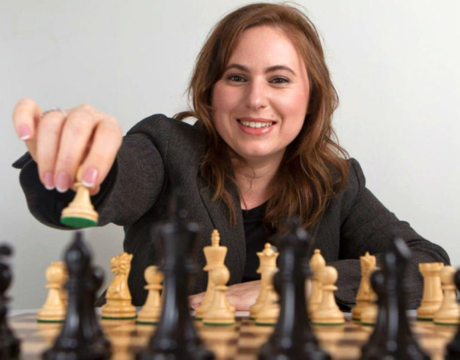

Великие шахматисты: легенды доски 8×8
Люди, которые превратили игру в искусство, науку и спорт.
Введение
Шахматы — это игра людей. За доской сражаются не только алгоритмы, но и характеры, амбиции и интеллект. За полторы тысячи лет история сохранила имена тех, кто менял правила, ломал стереотипы и заставлял миллионы людей затаив дыхание следить за их партиями. В этом разделе мы собрали биографии самых ярких гроссмейстеров — от первых чемпионов мира до современных гениев.

1. У истоков: первые чемпионы
Вильгельм Стейниц (Австрия/США)
Первый официальный чемпион мира (1886–1894). Стейниц был не просто сильным игроком, он был ученым. Именно он сформулировал принципы позиционной игры: захват центра, безопасность короля и накопление мелких преимуществ. До него в шахматы играли «на глазок», после него — начали думать стратегически.
Эмануил Ласкер (Германия)
Чемпион мира с 1894 по 1921 год. Удерживал титул 27 лет — абсолютный рекорд. Ласкер был доктором математики и философом. Он играл в «психологические шахматы»: выбирал не всегда объективно сильнейший ход, а тот, который был максимально неудобен конкретному сопернику.
Хосе Рауль Капабланка (Куба)
Третий чемпион мира. Его называли «шахматной машиной». Капабланка обладал феноменальной интуицией и техникой. С 1916 по 1924 год он не проиграл ни одной турнирной партии. Его стиль — это чистота, простота и безупречный эндшпиль.
Александр Алехин (Россия/Франция)
Четвертый чемпион мира, легенда комбинационной игры. В 1927 году он победил непобедимого Капабланку. Алехин — единственный чемпион мира, который умер непобежденным, сохранив титул до конца жизни.

2. Советская школа и Холодная война
Михаил Ботвинник (СССР)
Первый советский чемпион мира (1948–1963). Доктор технических наук, он подходил к шахматам как к точной науке: составлял планы на матчи за месяцы, вел картотеки дебютов и разрабатывал алгоритмы. Его называли «патриархом» советских шахмат.
Михаил Таль (СССР)
«Волшебник из Риги», чемпион мира (1960–1961). Таль играл в дерзком, жертвенном стиле, который казался невозможным на высшем уровне. Он доказывал, что красота и интуиция могут побеждать сухой расчет.
Тигран Петросян (СССР)
Чемпион мира (1963–1969), мастер обороны. Его называли «железным Тиграном» за умение защищаться в самых безнадежных позициях. Петросян практически никогда не проигрывал, предпочитая медленно накапливать преимущество.
Роберт Фишер (США)
11-й чемпион мира. Американский гений с тяжелым характером. В 1972 году в разгар Холодной войны он обыграл Бориса Спасского и прервал гегемонию советских шахматистов. Матч в Рейкьявике стал одним из самых зрелищных событий XX века.
3. Эпоха великого противостояния
Анатолий Карпов (СССР/Россия)
Чемпион мира (1975–1985). Обладал феноменальной техникой и умением играть без ошибок. Его стиль называли «удавом» — он медленно душил соперника позиционным давлением.
Гарри Каспаров* (СССР/Россия)
13-й чемпион мира, удерживавший титул 15 лет. Противостояние Карпова и Каспарова* в 1980-х стало одним из величайших в истории спорта. Каспаров* играл в агрессивном, динамичном стиле, любил сложные позиции и всегда шел до конца. Он первым из чемпионов проиграл матч компьютеру (IBM Deep Blue в 1997 году).

4. Современная эпоха
Владимир Крамник (Россия)
14-й чемпион мира. В 2000 году он отобрал титул у самого Каспарова*. Крамник известен своим строгим, академическим подходом к дебютам и умением переигрывать соперников в позиционной борьбе.
Вишванатан Ананд (Индия)
15-й чемпион мира, первый гроссмейстер из Индии. «Тигр из Мадраса» известен невероятной скоростью мышления и универсальным стилем. Он выигрывал чемпионат мира в разных форматах (турнир, матч, нокаут).
Магнус Карлсен (Норвегия)
16-й чемпион мира (2013–2023) и главный популяризатор шахмат нашего времени. «Моцарт шахмат», который стал гроссмейстером в 13 лет. Карлсен не просто играет сильнее всех, он выводит соперников из зоны комфорта, играя в эндшпилях с микроскопическим преимуществом. Его рейтинг Эло превышал 2882 балла — абсолютный мировой рекорд.
5. Женские шахматы: королевы доски
Вера Менчик (Чехословакия/Великобритания)
Первая чемпионка мира по шахматам (1927–1944). Она доминировала в женских шахматах абсолютно, выигрывая турниры с колоссальным отрывом.
Нона Гаприндашвили (СССР/Грузия)
5-я чемпионка мира, первая женщина, получившая звание международного гроссмейстера среди мужчин.
Юдит Полгар (Венгрия)
Сильнейшая шахматистка в истории. Она никогда не играла в чисто женских турнирах, предпочитая сражаться с мужчинами. Юдит побеждала 11 действующих и бывших чемпионов мира и входила в топ-10 мирового рейтинга.

6. Интересные факты
- Уильям Стейниц стал первым чемпионом мира, но умер в бедности, играя партии на деньги в парках Нью-Йорка.
- Ласкер был доктором философии и дружил с Альбертом Эйнштейном.
- Роберт Фишер в 1975 году отказался защищать титул чемпиона мира из-за несогласия с правилами ФИДЕ и был лишен звания без единой сыгранной партии.
- Магнус Карлсен достиг рейтинга 2882. Это на 50+ пунктов больше, чем у любого другого шахматиста в истории.
- Юдит Полгар — единственная женщина, которая входила в топ-10 мирового рейтинга среди мужчин.
Что дальше?
📜 История шахмат — от чатуранги до наших дней
♟ Правила игры — как ходят фигуры и как выиграть партию
📖 Шахматный словарь — термины и понятия
🔗 Полезные ресурсы — где играть и учиться
* Примечание: Нам необъходимо выполнить требование российского законодательства: Гарри Каспаров* после завершения спортивной карьеры занимается политической деятельностью. Внесен Минюстом РФ в реестр иностранных агентов, а Росфинмониторингом — в перечень террористов и экстремистов.